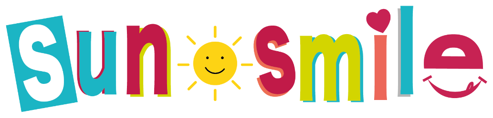
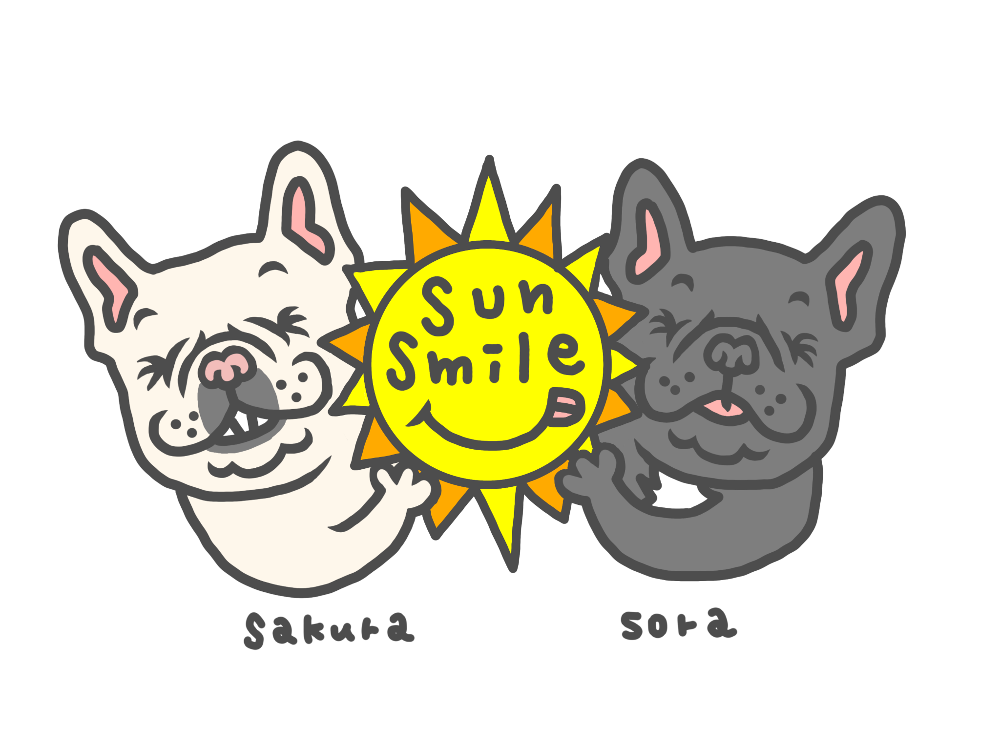

※ 写真は調理前の状態です。
01牛タン串・牛串
香ばしく焼き上げる、食べごたえのある自慢の串焼き。
GRILLED SKEWERS
できたてのおいしさを、今日もあなたの街へ。
夫婦で始めた黄色いキッチンカー「sun smile」です。

sun smileは、夫婦ふたりでゼロから作り上げたキッチンカーです。
2022年11月に営業をスタート。九州各地のイベントやマルシェに出店しています。素材選びから味まで、自分たちが納得できたものだけをお届けします。
温かいものは温かく、冷たいものは冷たく。焼きたて・揚げたて・出来たてを大切に、今日も心を込めて営業しています。
イベントや出店先により販売メニューは異なります。
※ 写真は調理前の状態です。
01香ばしく焼き上げる、食べごたえのある自慢の串焼き。
GRILLED SKEWERS
長さにもおいしさにもこだわった、人気の揚げたてポテト。
LONG FRIES
お祭り気分がもっと楽しくなる、甘い定番スイーツ。
CHOCOLATE BANANA
すっきり爽やか。お食事と一緒にもおすすめのドリンク。
LEMONADE※ 掲載メニューは一例です。価格・提供内容は出店先により異なります。
最新の出店情報はブログでもお知らせします。
出店報告、イベントの様子、日々のお知らせを写真とともにお届けします。
このカテゴリーにはまだ記事がありません。